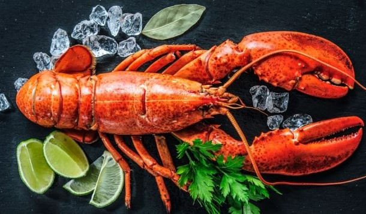

<ion-header>
  <ion-toolbar>
    <ion-buttons slot="start">
      <ion-back-button defaultHref="home" RouterLink="/home"></ion-back-button>
    </ion-buttons>
    <ion-title>Nos Recettes</ion-title>
  </ion-toolbar>
</ion-header>

<ion-content fullscreen>
  <ion-card>
    
    <ion-card-header>
      <ion-card-subtitle>Le bateau Thibault</ion-card-subtitle>
      <ion-card-title>Homard</ion-card-title>
    </ion-card-header>
    <ion-card-content>
      Le homard est un animal paisible qui devient d'un beau rouge à la cuisson.
    </ion-card-content>
  </ion-card>
</ion-content>
